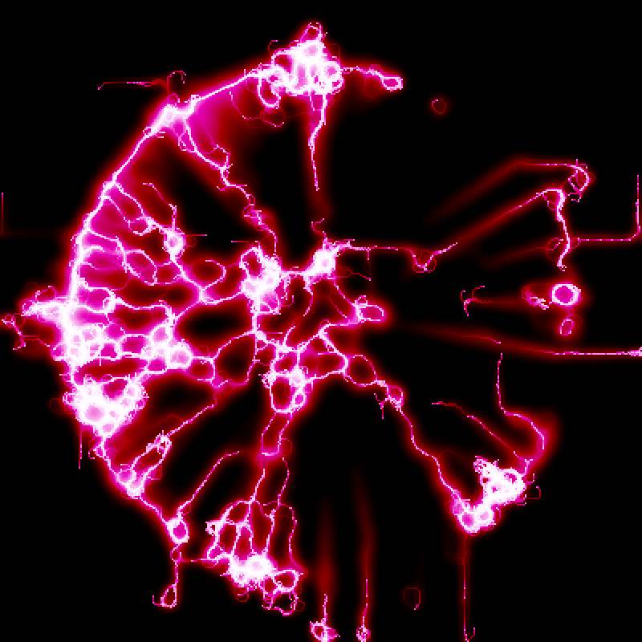
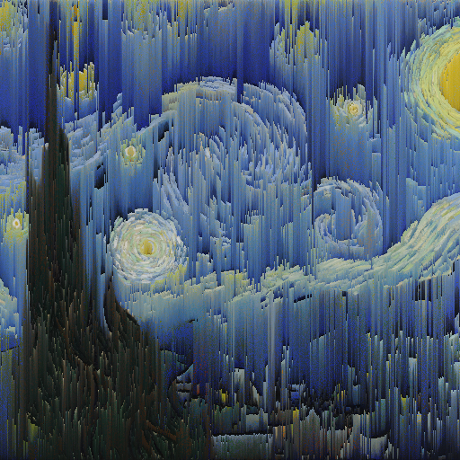

TallonKH.github.io
small programs that work in your browser
(unless you're on a mobile device)
Matrix 3
(2021)
A complex falling-sand simulation with full-color lighting and an infinite canvas.
Currently has ~40 unique materials.
(note: no association with the movie franchise)
Currently has ~40 unique materials.
(note: no association with the movie franchise)
ArcField
(2021)

Thousands of flowing particles that follow simple rules and form hypnotic shapes.
My first foray into GPU-based JavaScript.
My first foray into GPU-based JavaScript.
[art_crash]
(2021)
A tool for creating abstract art using highly unconventional tools.
Inspired by glitches in old operating systems.
Inspired by glitches in old operating systems.
The Fractory
(2019)
A fractal factory.
Quite versatile once you get the hang of it.
Quite versatile once you get the hang of it.
Pixel Sorter
(2021)

A tool for sorting lines of pixels by color, lightness, etc.
Modular Audio Playground
(2020)
An attempt to model the adaptive nature of music in (some) videogames.
A bit glitchy. As it turns out, browsers aren't great at keeping 10 different audio tracks in sync.
A bit glitchy. As it turns out, browsers aren't great at keeping 10 different audio tracks in sync.